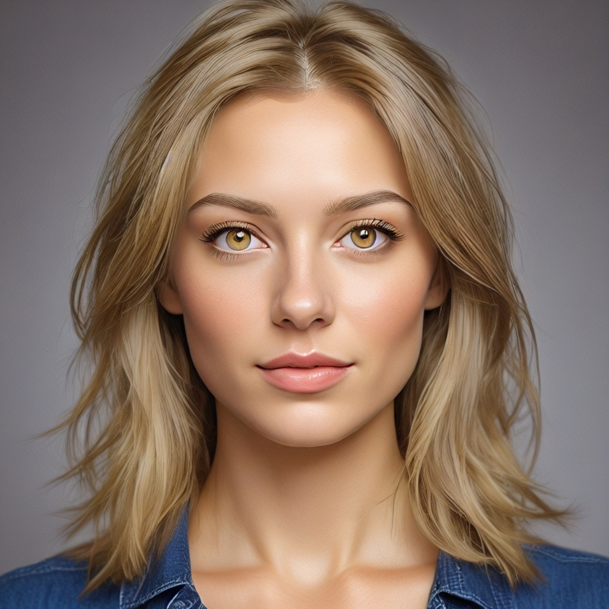
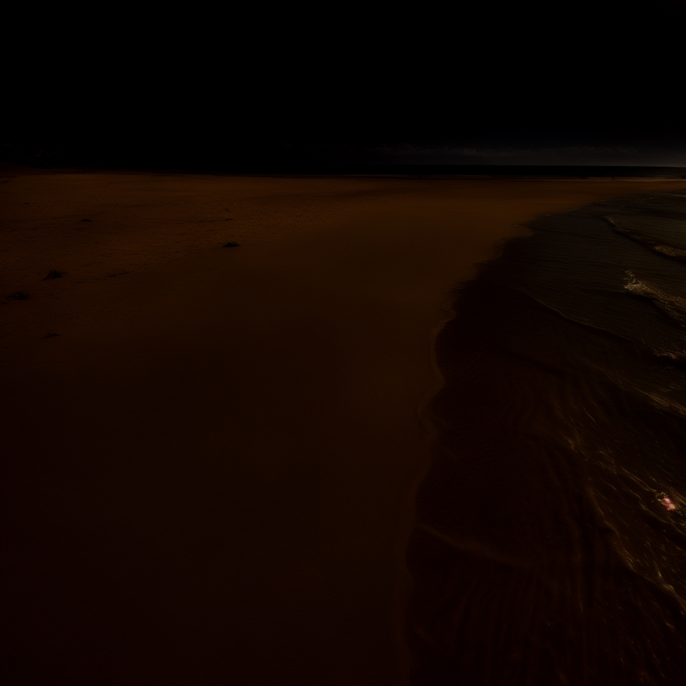

छवि मार्गदर्शित सम्पादनका सुझावहरू
AiCasso मा छवि मार्गदर्शित सम्पादन सुविधाले तपाईंलाई केवल तपाईं के परिवर्तन गर्न चाहनुहुन्छ भनेर वर्णन गरेर चित्रमा परिवर्तन गर्न अनुमति दिन्छ। तपाईंले शैली परिवर्तन गर्न चाहनुहुन्छ, मूड समायोजन गर्न चाहनुहुन्छ, वा निश्चित भागहरूमा परिवर्तन गर्न चाहनुहुन्छ भने, AiCasso ले तपाईंको लागि यो सबै गर्न सक्छ बिना तपाईंलाई म्यानुअल रूपमा केही चयन गर्न वा रंग गर्न आवश्यक पर्दैन।
यो कसरी काम गर्छ:
तपाईंको परिवर्तन वर्णन गर्नुहोस्:
तपाईंले के परिवर्तन गर्न चाहनुहुन्छ भनेर केवल टाइप गर्नुहोस्, र AiCasso ले ती परिवर्तनहरू छविमा लागू गर्नेछ।
उदाहरण सम्पादनहरू:
उदाहरण 1: "उनीलाई सुन्तला बनाउनुहोस्।"

परिणाम: AiCasso ले व्यक्तिको कपालको रंग सुन्तला बनाउनेछ।
उदाहरण 2: "यसलाई रात बनाउनुहोस्, 50 चरणहरू प्रयोग गर्नुहोस्, मार्गदर्शन स्केल 1, र छवि मार्गदर्शन स्केल 1।"

परिणाम: छवि रातको दृश्यमा रूपान्तरण हुनेछ जसमा तपाईंले प्रदान गरेको विवरणको आधारमा विशेष समायोजनहरू गरिनेछ।
थप विकल्पहरू
तपाईं यी वैकल्पिक सेटिङहरू प्रयोग गरेर आफ्नो सम्पादनहरूलाई सन्तुलित गर्न सक्नुहुन्छ:
- छवि मार्गदर्शन स्केल: यसले नयाँ छवि मूलसँग कति नजिक रहन्छ भन्ने कुरा नियन्त्रण गर्दछ। कम मानले परिवर्तनहरू अधिक सूक्ष्म बनाउँछ, जबकि उच्च मानले तिनीहरूलाई बढी स्पष्ट बनाउँछ। तपाईं यसलाई 1 र 8 बीच सेट गर्न सक्नुहुन्छ।
- चरणहरू: यसले उपकरणले कति सुधार गर्नेछ भनेर सेट गर्दछ। धेरै चरणहरूले अन्तिम छविलाई थप चिल्लो र विस्तृत बनाउँछ। तपाईं 1 र 50 चरणहरू बीच चयन गर्न सक्नुहुन्छ, 20 डिफल्टको रूपमा।
- मार्गदर्शन स्केल: यसले AI ले तपाईंको वर्णनलाई कति नजिकबाट अनुसरण गर्छ भन्ने कुरा असर गर्छ। कम स्केलले AI लाई अधिक सिर्जनात्मक स्वतन्त्रता दिन्छ, जबकि उच्च स्केलले यसलाई तपाईंले भनेको कुरामा नजिकै राख्छ। तपाईं यसलाई 1 र 20 बीच समायोजन गर्न सक्नुहुन्छ।